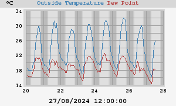
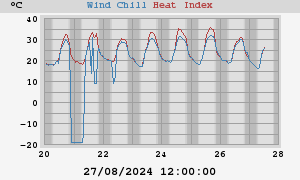
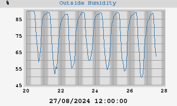
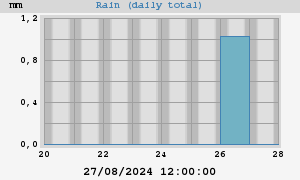
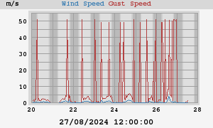
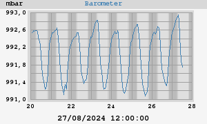
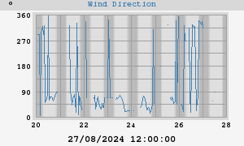
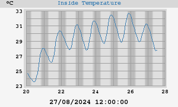
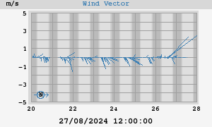

Weekly Statistics and Plots









|
High Temperature Low Temperature |
30,6°C at 16:39:25 (lunedì) 16,1°C at 06:37:20 (martedì) |
| High Heat Index | 32,2°C at 16:42:12 (lunedì) |
| Low Wind Chill | -18,9°C at 14:52:22 (lunedì) |
|
High Humidity Low Humidity |
89% 05:40:48 (lunedì) 47% 15:43:43 (lunedì) |
|
High Dewpoint Low Dewpoint |
21,1°C 11:21:58 (lunedì) 14,1°C 06:37:20 (martedì) |
|
High Barometer Low Barometer |
993,1 mbar at 06:38:56 (martedì) 991,2 mbar at 16:19:49 (lunedì) |
| Rain Total | 1,0 mm |
| High Rain Rate | 0,5 mm/hr at 03:44:26 (lunedì) |
| High Wind Speed | 51,1 m/s from 315° at 09:09:35 (lunedì) |
| Average Wind | 0,4 m/s |
| RMS Wind | 1,0 m/s |
|
Vector Average Speed Vector Average Direction |
0,5 m/s 331° |
|
High Inside Temperature Low Inside Temperature |
32,3°C at 00:00:02 (lunedì) 27,7°C at 09:36:36 (martedì) |
|
High Temperature Low Temperature |
35,1°C at 12/08/2024 15:26:01 14,6°C at 08/08/2024 04:38:08 |
| High Heat Index | 40,9°C at 13/08/2024 13:36:48 |
| Low Wind Chill | -18,9°C at 01/08/2024 00:45:51 |
|
High Humidity Low Humidity |
90% at 02/08/2024 01:09:02 25% at 11/08/2024 06:45:26 |
|
High Dewpoint Low Dewpoint |
24,1°C at 01/08/2024 16:07:16 -1,8°C at 11/08/2024 06:45:26 |
|
High Barometer Low Barometer |
993,2 mbar at 08/08/2024 04:17:32 990,7 mbar at 12/08/2024 14:54:31 |
| Rain Total | 34,7 mm |
| High Rain Rate | 6,2 mm/hr at 01/08/2024 18:35:08 |
| High Wind Speed | 51,1 m/s from 338° at 02/08/2024 14:06:05 |
| Average Wind | 0,4 m/s |
| RMS Wind | 0,7 m/s |
|
Vector Average Speed Vector Average Direction |
0,4 m/s 17° |
|
High Inside Temperature Low Inside Temperature |
34,5°C at 12/08/2024 19:51:04 23,6°C at 20/08/2024 11:00:00 |